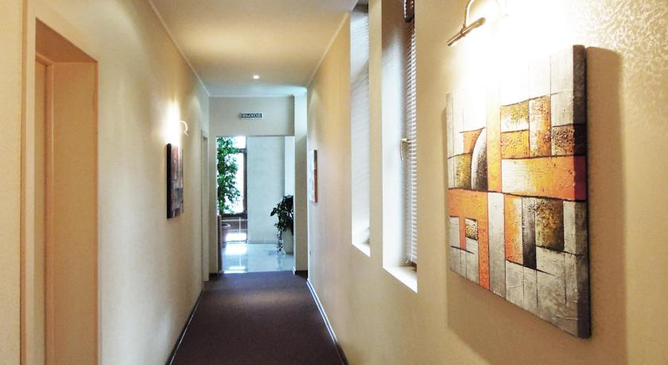
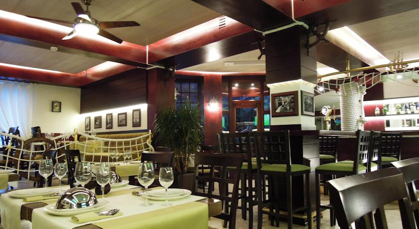
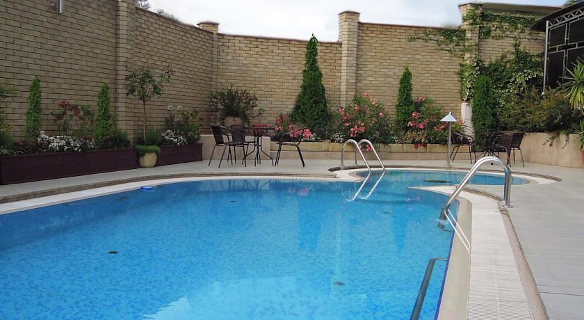
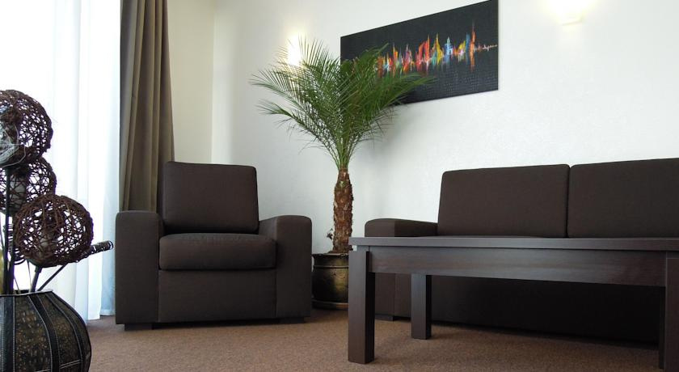

Бутик-отель Green Deck






Бутик-отель Green Deck расположен в городе Сочи, в 5 минутах езды от пляжа Черного моря. К услугам гостей бесплатный Wi-Fi, бесплатная парковка, открытый бассейн и турецкая паровая баня.
Светлые номера с кондиционером оформлены в современном стиле и теплых тонах. В каждом номере имеется телевизор с плоским экраном, мини-бар, балкон и собственная ванная комната с халатами.
В отеле работает ресторан, где подают блюда европейской кухни, и бар, где можно заказывать разнообразные напитки.
Парк развлечений «Ривьера» находится в 2,5 км от отеля, а центральный Курортный проспект — в 3,5 км.
Расстояние от бутик-отеля Green Deck до центрального железнодорожного вокзала Сочи составляет 3,5 км, а до международного аэропорта Сочи — 31 км.
Мы говорим на вашем языке!
Бутик-отель Green Deck — принимает гостей с 30 мая 2013
Номеров в отеле: 19